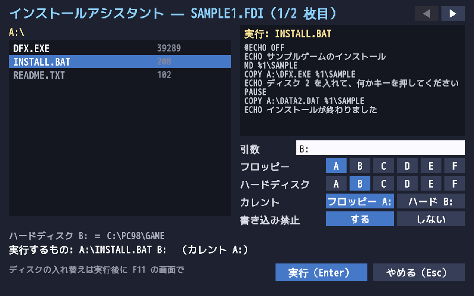
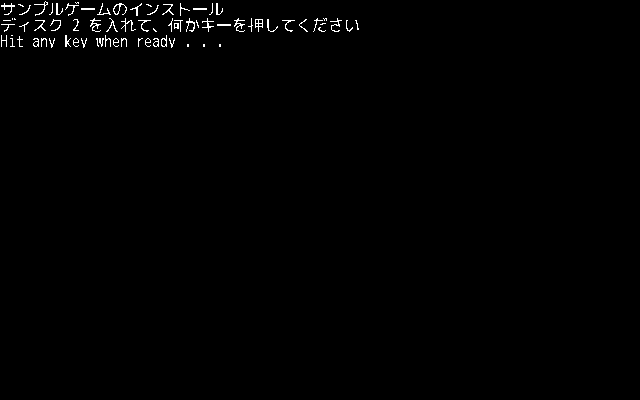
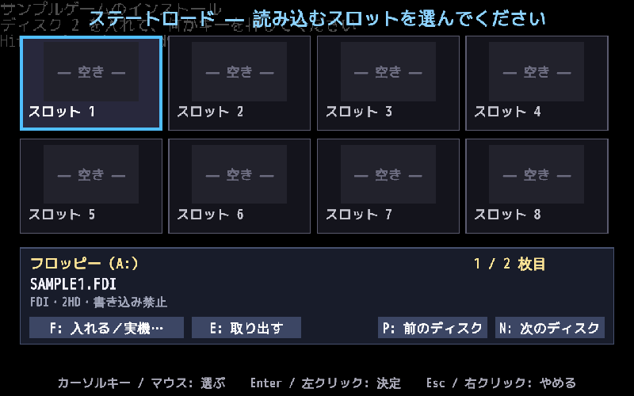

フロッピーのイメージをまとめてセットしたり、本物のフロッピードライブを使ったりして、インストールアシスタントでゲームのインストーラを動かすスタイルです。
フロッピー版のゲームは、実機と同じようにゲーム付属のインストーラでハードディスクへインストールしてから遊びます。 インストールアシスタントは、フロッピー（イメージまたは本物）とインストール先のフォルダ（ハードディスク）を用意して、インストーラを動かすところまでを手伝います。
PC98PLAYER.INI を作りません（インストール先に INI があれば、音などの設定だけ借ります）。DISK1.FDI なら DISK1）を作ってそこへインストールします。インストール先は画面の左下に表示されます。フロッピーイメージを PC98PLAYER.EXE にドロップすると（第 1 引数がフロッピーイメージのとき）、次の画面になります。

| 場所 | はたらき |
|---|---|
| タイトル | 中身を表示しているイメージの名前と「何枚目か」。右上の ◀ ▶ で、中身を見るディスクを切り替えます。 |
| 左: フロッピーの中身 | フォルダ（[名前]）はクリックで開き、ファイルはクリックでインストーラに選びます。BAT・EXE・COM は白で表示。ダブルクリックでそのまま実行。最初は INSTALL.BAT などインストーラらしいファイルが選ばれています。ホイールで一覧を送れます。 |
| 右上: 中身 | 選んだ BAT やテキスト（README など）の先頭の行。インストーラがどんな引数（%1 など）を待っているかの手がかりになります。実行ファイルは大きさを表示します。 |
| 引数 | インストーラに渡す引数。クリックして入力します（Tab キーでも切り替え）。例: B: |
| フロッピー / ハードディスク | それぞれのドライブ名（A〜F）。ハードディスク＝インストール先のフォルダです。同じ文字を選ぶと入れ替わります。 |
| カレント | 始めるときのカレントドライブ（フロッピーかハードディスクか）。 |
| 書き込み禁止 | 「する」（既定）で、フロッピーを書き込み禁止（ライトプロテクト）にして見せます。「ゲームディスクをライトプロテクト状態にして下さい」と確かめるインストーラ（下級生など）があるためです。インストーラがフロッピーへ書き込む必要があるときは「しない」にします。本物のドライブでは「つまみのまま」（ディスクのつまみに従う）になります。 |
| 左下 | インストール先のフォルダと、実際に実行するコマンド（例: A:\INSTALL.BAT B:（カレント A:））。 |
| 実行（Enter）/ やめる（Esc） | インストーラを動かす / 何もせずに終わる。 |
INSTALL インストール先」の形（図 3-1 の %1）→ 引数にハードディスクのドライブ名（B: など）、カレントはフロッピー。DISK1.FDI と DISK2.FDI を選んで、まとめて PC98PLAYER.EXE にドロップします。INSTALL.BAT が選ばれていることを確かめます。右上に MD %1\SAMPLE のような行が見えるので、引数にはインストール先のドライブを渡せばよいとわかります。B:、フロッピー A、ハードディスク B、カレントは「フロッピー」にして、「実行」を押します。
何枚かをまとめてドロップすると、名前順（DISK1、DISK2 …）に並べて、1 枚目を入れた状態から始めます。 インストーラが「ディスク 2 を入れてください」と言ったら、F11 を押して、下の「フロッピー」の欄で入れ替えます。

| キー / ボタン | はたらき |
|---|---|
| N / 「N: 次」 | 次のディスクへ入れ替えます。 |
| P / 「P: 前」 | 前のディスクへ入れ替えます。 |
| F / 「F: 入れる／実機…」 | メニューから何枚目かを選んで入れたり、別のイメージ・本物のドライブを選んだりします。 |
| E / 「E: 取り出す」 | ディスクを取り出します。 |
入れ替えたら Esc で F11 の画面を閉じ、インストーラの指示どおりキーを押して続けます。
インストーラ（バッチ）が終わると、インストールアシスタントが次のように聞いてきます。
Start=（選んだファイル）と Drive=（インストールのときのハードディスクのドライブ名）を書いた INI を作り、「続けてゲームを起動しますか？」と聞きます。Drive= を書くのは、インストーラがドライブ名（B: など）をゲームの設定ファイルに書き込むことがあるためです。インストールのときと同じドライブ名で遊べるようにしています。次からは、インストール先のフォルダで第一章のとおり起動してください。
イメージを作らなくても、ゲームのディスクを入れた本物のフロッピードライブ（USB フロッピーなど）から、そのままインストールできます。
PC98PLAYER.EXE にドロップします（第 1 引数に A:\ を渡すのと同じ。FDD:A や、Greaseweazle の GW でも構いません）。PC98PLAYER.EXE の横の PC98GAME フォルダになります。本物のフロッピードライブは、インストールだけでなく、遊ぶときの仮想フロッピー（キーディスクなど）にも使えます。ディスクの中身は使うときにその場で読みます。
| USB フロッピードライブ | Greaseweazle ＋ PC 用の FDD | |
|---|---|---|
| 読み方 | Windows のドライバ経由で「セクタ番号」で読む | 磁気信号（フラックス）をそのまま読み、PC98PLAYER が自分で復調する |
| 普通のディスク（ファイルの読み書き・インストール） | ○（書き込みも可） | ○（読み込みのみ） |
| プロテクトつきの正規ディスク（キーディスクの確認） | ×（ID のずれたセクタ・CRC エラー等を扱えない） | ○（隠れたセクタ・CRC エラー・読むたびに変わるセクタ等もそのまま） |
| PC-98 の 1.25MB（2HD） | 3 モード対応のドライブだけ | 3.5 インチ・5 インチの 2HD ドライブ（回転数の違いは自動で合わせます） |
| 初めて読むトラックの待ち時間 | 0.3 秒ほど | 1 秒ほど |
FloppyDisk=FDD:A（Windows のフロッピードライブ A:。\\.\A: とも書けます）、FloppyDisk=GW（Greaseweazle を USB の ID で探します。見つからないときは GW:COM5 のようにポートを指定）。FloppyDisk= は FloppyImage= と同じ意味で、どちらで書いても構いません。GWDrive=A（PC のケーブルのドライブ A / B。Shugart 接続なら 0 / 1 / 2）、GWRevs=3（1 トラックを何回転ぶん読むか。1〜8。多いほど読みにくいディスクに強く、遅くなります）。samples\slayers.INI（スレイヤーズ！のキーディスクを Greaseweazle で吸い出して使う）。インストールアシスタントを使わずに、INI にフロッピーとインストーラを書いてインストールすることもできます。空のフォルダ（インストール先）に次のような PC98PLAYER.INI を置いて起動します。
; 「転送元のフロッピーのドライブ名を引数で渡し、今いるドライブへ写す」インストーラの例 [PC98PLAYER] Drive=A FloppyImage=SLAYERS_B.d88 FloppyDrive=B Start=B:\INST.EXE Args=B CurrentDrive=A ExitOnEnd=0
Start=B:\INSTALL.BAT のようにドライブ付きで書くと、そのドライブをカレントにして実行します。CurrentDrive= で別のドライブをカレントにもできます。A> から B:INSTALL と打って使うもの。同級生など）は、Start=B:\INSTALL.EXE と CurrentDrive=A（ゲームのフォルダ）を一緒に書きます。書かないとカレントがフロッピーになり、「カレントドライブがハードディスクドライブではありません」と止まります。CurrentDirectory=A:\NANPA\ を書きます。フォルダはゲームのフォルダの下に自動で作られ、インストール先も NANPA フォルダになります。遊ぶときは Start=NANPA\NANPA.BAT とします。Drive=B・FloppyDrive=A のように入れ替えます。COMMAND.COM /C COPY … のように呼ぶ内部コマンド（COPY・MD・DEL など）にも対応しています。Start= などをゲームの起動用に書き換えます（FloppyImage= はキーディスクが要らなければ消します）。「インストーラのディスクを 2 台目のドライブに、データのディスクを 1 台目のドライブに」のように、2 台のドライブを前提にしたインストーラは、
FloppyDisk2=・FloppyDrive2= で 2 台目にもディスクを入れます。例: ドライブ A: をハードディスク（インストール先）、B: を 1 台目、C: を 2 台目にする場合
[PC98PLAYER] Drive=A FloppyDrive=B FloppyDisk=DN4_A.NFD ; 1 台目（B:）: 最初に求められるデータのディスク FloppyDrive2=C FloppyDisk2=DN4_C.NFD ; 2 台目（C:）: インストーラ（INSTALL.EXE）のあるディスク Start=C:\INSTALL.EXE Args=A: FloppyWriteProtect=1 ; 「ライトプロテクト状態ではありません」と止まるインストーラ向け ExitOnEnd=0
FloppyWriteProtect=1 を書くと、入れるディスクがすべて書き込み禁止になります。1 枚ずつなら、F11 →「F: 入れる／実機…」のメニューの「書き込み禁止（ライトプロテクト）」で切り替えられます（入れ替えると、そのイメージの元の状態に戻ります）。Start= を作られた起動用のバッチ（例: DRA4\DRA4.BAT）に書き換え、FloppyDisk= などは消します。PC98PLAYER のディスク BIOS（INT 1Bh）は、ID を指定したセクタの読み込み・READ ID・READ DIAGNOSTIC などに応え、イメージに記録されたセクタの ID・CRC エラー・デリーテッドデータ、 読むたびに内容が変わるセクタもそのまま返します。そのため、プロテクトの情報まで記録されたイメージ（D88・NFD r1 など）や Greaseweazle で読んだディスクなら、キーディスクの確認を通ることがあります。
FloppyImage= にそのディスクのイメージ（または本物のドライブ）を書いておきます。PC-98 が出たばかりのころのゲーム（PC-88 からの移植など）には、MS-DOS を使わず、電源を入れるとフロッピーの起動プログラム（IPL）から直接立ち上がるものが多くあります。 ハードディスクへのインストールも無く、ディスクの中身はファイルの形になっていないので、フォルダへ展開もできません。 PC98PLAYER は、こうしたディスクをブートモードで、実機と同じようにフロッピーから起動します。
PC98PLAYER.EXE にドロップします。PC98PLAYER.INI（Boot=FD）を作るので、次からはそのフォルダに PC98PLAYER.EXE を置いてダブルクリックするか、ショートカットから起動できます。ブートモードでは、実機と同じくフロッピードライブが 2 台あります。F11 の画面のフロッピーの欄で:
| 項目 | 説明 |
|---|---|
Boot=FD | MS-DOS を使わず、1 台目のドライブのフロッピーから起動します。Start= は要りません。 |
FloppyDisk= | 1 台目のドライブに入れるディスク（起動ディスク）。 |
FloppyDisk2= | 2 台目のドライブに入れるディスク（FloppyImage2= と書いても同じ）。 |
当時のソフトは 8MHz・10MHz の機種で作られているので、自動で作る INI は CpuMHz=10・SoundBoard=26 にしてあります。速すぎるときや音が出ないときは変えてみてください（変えたら F11 → R で試せます）。